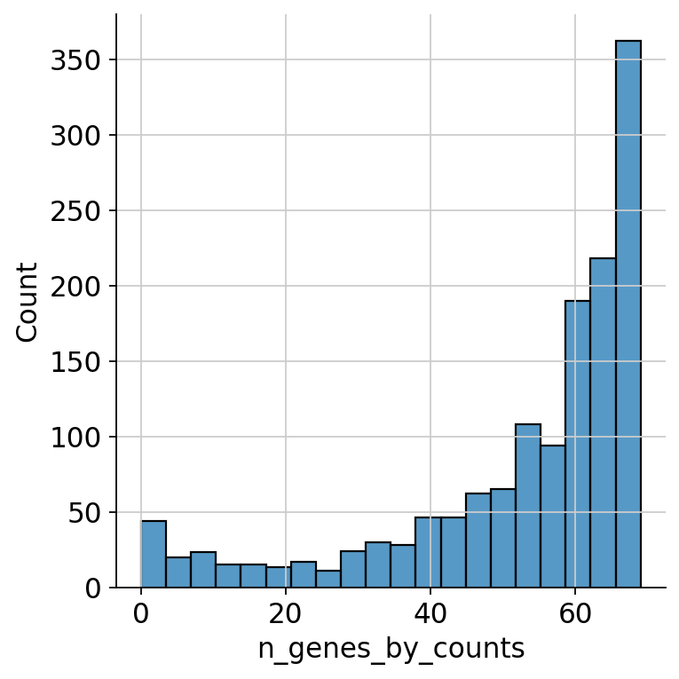
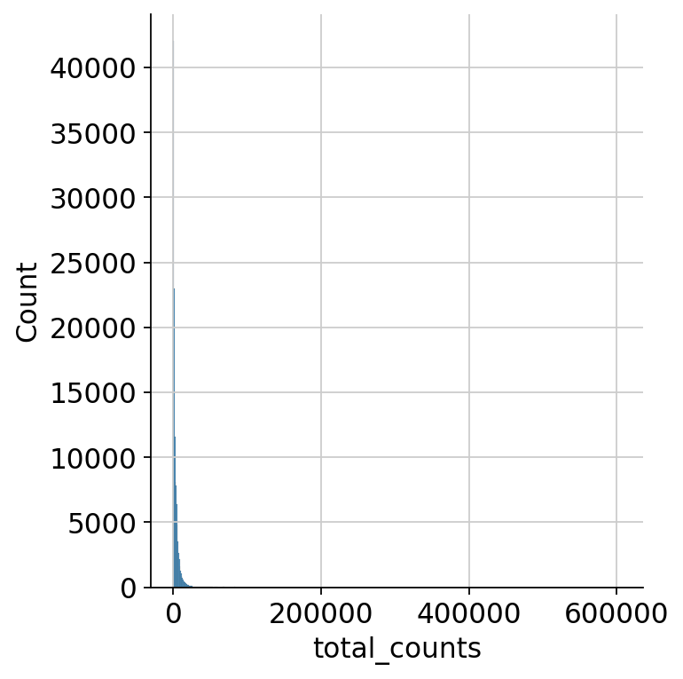
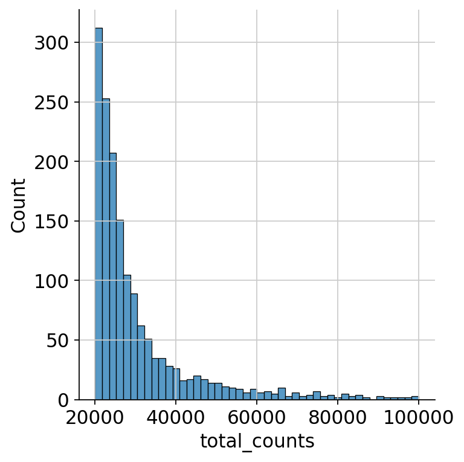
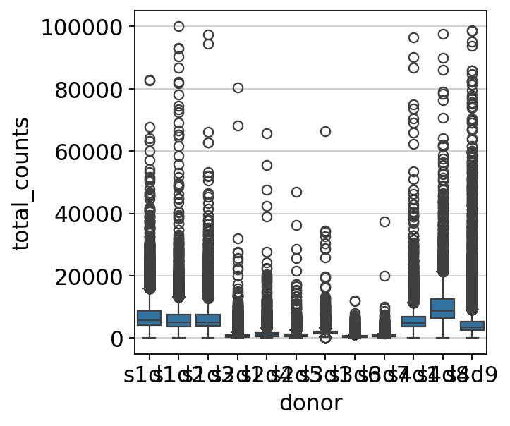

34. Quality control#
Key takeaways
Single-cell surface protein measurements complement RNA-seq data, improving cell type identification and revealing treatment effects not visible at the transcript level. Quality control of the ADT (surface protein) data removes cells with too few or too protein counts.
Environment setup
Install conda:
Before creating the environment, ensure that conda is installed on your system.
Save the yml content:
Copy the content from the yml tab into a file named
environment.yml.
Create the environment:
Open a terminal or command prompt.
Run the following command:
conda env create -f environment.yml
Activate the environment:
After the environment is created, activate it using:
conda activate <environment_name>
Replace
<environment_name>with the name specified in theenvironment.ymlfile. In the yml file it will look like this:name: <environment_name>
Verify the installation:
Check that the environment was created successfully by running:
conda env list
name: surface-protein
channels:
- conda-forge
dependencies:
- python=3.13
- scanpy=1.12
- muon=0.1.7
- python-igraph=1.0.0
- ipykernel=7.2.0
- pip==26.0.1
- pip:
- lamindb==2.3.1
- harmonypy==0.0.9
Get data and notebooks
This book uses lamindb to store, share, and load datasets and notebooks using the theislab/sc-best-practices instance. We acknowledge free hosting from Lamin Labs.
Install lamindb
Install the lamindb Python package:
pip install lamindb
Optionally create a lamin account
Sign up and log in following the instructions
Verify your setup
Run the
lamin connectcommand:
import lamindb as ln ln.Artifact.connect("theislab/sc-best-practices").df()
You should now see up to 100 of the stored datasets.
Accessing datasets (Artifacts)
Search for the datasets on the Artifacts page
Load an Artifact and the corresponding object:
import lamindb as ln af = ln.Artifact.connect("theislab/sc-best-practices").get(key="key_of_dataset", is_latest=True) obj = af.load()
The object is now accessible in memory and is ready for analysis. Adapt the
lamindb.Artifact.connect("theislab/sc-best-practices").get("SOMEIDXXXX")suffix to get respective versions.Accessing notebooks (Transforms)
Search for the notebook on the Transforms page
Load the notebook:
lamin load <notebook url>
which will download the notebook to the current working directory. Analogously to
Artifacts, you can adapt the suffix ID to get older versions.
34.1. Motivation#
In addition to capturing only transcriptomic data with single cell analyses, we are now able to also capture the abundance of surface protein expression. The protocol used for this is usually referred to as CITE-seq[Stoeckius et al., 2017]. This modality requires different preprocessing compared to what we described earlier for gene expression data since the data distributions are different. In the following, we will guide you through the process of dealing with CITE-seq data. As CITE-seq data provides you with two different modalities, you can either analyze them separately or jointly. Here, we will focus on the ADT part of the data and analyze it unimodally. For a joint analysis of ADT and RNA data, we refer to the multimodal integration chapter Paired integration.
Single-cell RNA-seq data acts as a proxy for protein level with a partial correlation at various transcription states of a cell[Liu et al., 2016]. Therefore, it is in our interest to measure the protein levels in single-cells if we are to capture a better picture of cellular processes. Quantifying these aspects of a cell is essential to understand cell differentiation and fate, cell signal transduction pathways, disease progression, perturbations, and clinical diagnostics[Xie and Ding, 2022].
We can already detect relevant populations with single-cell transcriptomics. This is a valuable piece of information, but incomplete if we want to better understand the cellular identities and dynamics happening in the biological processes we study. Having surface protein measurements allows us to close the gap between identity by transcription and identity by protein where there might be a delay in synthesis that could be important in our experiment. For example, it has been noted that ICOS, an immune checkpoint protein, was increased on the surface of treated cells, regardless of the fact that this protein’s mRNA does not differ in abundance between the treatment groups[Peterson et al., 2017]. Another advantage is that surface protein levels help us detect doublets that might not be reflected at the transcript level in our data. This is possible by looking at the co-occurrence of cell-type-specific markers[Sun et al., 2021], Doublet detection.
By using antibodies tagged with a nucleotide barcode, it is possible to first bind the antibodies to the cells and later sequence the barcodes together with the RNA. There are two main protocols: CITE-seq (Cellular Indexing of Transcriptomes and Epitopes by Sequencing) and REAP-seq (RNA expression and protein sequencing assay). The main difference resides in their antibody-oligo conjugates also known as Antibody-Derived Tags (ADT). CITE-seq uses streptavidin that is noncovalently bound to biotinylated DNA barcodes. REAP-seq implements covalent bonds between the antibody and a DNA barcode[Peterson et al., 2017]. Furthermore, there have been advances integrating the CITE-seq protocol in a multimodal assay. One is DOGMA-seq[Mimitou et al., 2021], an adaptation of CITE-seq that allows the measurement of chromatin accessibility, gene expression, and protein from the same cell. This method includes ASAP-seq, which combines scATAC-seq and ADT by adding a bridge oligo specific to the CITE-seq reagents[Mimitou et al., 2021]. The advantage of ASAP-seq is that it can measure surface and intracellular proteins. We will refer to the surface protein measurements as ADT data.

With ADT data, we can identify cell types based on conventional markers usually utilized in flow cytometry experiments. These markers are especially useful for specific immune cell populations. The advantage of ADT is that other modalities are measured simultaneously. However, the way we process ADT data differs from others. Contrary to the negative binomial distribution of UMI counts, ADT data is less sparse with a negative peak for non-specific antibody binding and a positive peak resembling enrichment of specific cell surface proteins[Zheng et al., 2022]. Many experiments include only a small number—typically in the tens or hundreds—of antibodies of interest.. Moreover, sequencing resources can be concentrated enabling deeper coverage of ADTs since they are separated from transcripts. ADT data can also be noisier, as unbound antibodies lead to counts in cells or empty droplets where the protein is not present.
34.2. Environment setup and data#
We use a CITE-seq data set generated for a single cell data integration challenge at the NeurIPS conference 2021 [Luecken et al., 2021]. This dataset captures single-cell RNA and Antibody-Derived Tag (ADT) data from bone marrow mononuclear cells of 12 healthy human donors measured at four different sites to obtain nested batch effects. In this tutorial, we will use the whole dataset which contains 140 surface proteins.
We will use scanpy and muon[Bredikhin et al., 2022] to analyze the data. We first start by importing all packages that are required for running this notebook.
import warnings
import muon as mu
import numpy as np
import pandas as pd
import scanpy as sc
import seaborn as sns
from scipy.stats import median_abs_deviation
warnings.filterwarnings("ignore")
mu.set_options(pull_on_update=False)
sc.settings.verbosity = 0
sc.set_figure_params(
dpi=80,
facecolor="white",
frameon=False,
)
import lamindb as ln
ln.track()
→ found notebook quality_control.ipynb, making new version -- anticipating changes
→ created Transform('FATGTTa0bL500005', key='quality_control.ipynb'), started new Run('Jo8rLdu1Zy6ipxks') at 2026-04-10 17:26:28 UTC
→ notebook imports: lamindb-core==2.3.1 muon==0.1.7 numpy==2.4.3 pandas==2.3.3 scanpy==1.12 scipy==1.16.3 seaborn==0.13.2
• recommendation: to identify the notebook across renames, pass the uid: ln.track("FATGTTa0bL50")
34.2.1. Loading the CITE-seq data#
Next, we now load the CITE-seq dataset from the single cell data integration challenge at the NeurIPS conference 2021 [Luecken et al., 2021]. This CITE-seq dataset is organized into a MuData object. A MuData object of a CITE-seq dataset contains two AnnData objects of the two data modalities: an AnnData object of the RNA data and an AnnData object of the ADT (protein) data.
af = ln.Artifact.connect("theislab/sc-best-practices").get(
key="surface-protein/cite_filtered.h5mu", is_latest=True
)
mdata = af.load()
mdata
MuData object with n_obs × n_vars = 122016 × 36741
var: 'gene_ids', 'feature_types'
2 modalities
rna: 122016 x 36601
obs: 'donor', 'batch'
var: 'gene_ids', 'feature_types'
prot: 122016 x 140
obs: 'donor', 'batch'
var: 'gene_ids', 'feature_types'We have 122,016 droplets. The RNA data contains 36601 genes (the full transcriptome) and the ADT data contains 140 surface proteins. Here we use the filtered version of the data, that is, with all barcodes that passed the preprocessing filter with CellRanger.
34.3. Quality Control#
As in transcriptomics data quality control and filtering, we need to remove cells that failed to capture ADTs. Solely reusing the earlier introduced transcriptomics quality control measures is inappropriate due to the above-mentioned fundamentally different count distributions in ADT data.
We recommend to first remove cells that captured few surface proteins. In practice, this is more robust than filtering based on total ADT counts alone. When targeted proteins are successfully captured, total ADT counts can increase disproportionately, driven by the near-binary expression patterns of many surface markers (i.e., largely present or absent rather than continuously varying). As a result, when removing cells that failed to capture ADTs, we recommend removing cells that captured few surface proteins rather than removing cells with low total ADT counts.
sc.pp.calculate_qc_metrics(mdata["prot"], inplace=True, percent_top=None)
We first look at the distribution of captured ADTs per cell over all samples. We plot this using the seaborn library. We first take a look at the whole range and can see that most cells express between 70 and 140 proteins.
sns.displot(mdata["prot"].obs.n_genes_by_counts)
<seaborn.axisgrid.FacetGrid at 0x7fdad8db6350>

As the cells falling below a certain threshold of present ADT markers and not following the distribution are probably not viable cells, we want to filter out those cells. Thus, we look at the lower end of the distribution:
sns.displot(
mdata["prot"][mdata["prot"].obs.n_genes_by_counts < 70].obs.n_genes_by_counts
)
<seaborn.axisgrid.FacetGrid at 0x7fdacf67bb10>
{kind=link}

We can see a ‘valley’ in the distribution at around 55 ADTs. This looks like an appropriate cutoff.
Next, we do the same thing based on total counts per cell. Looking at the total range, we can’t see any apparent ranges of the distribution of counts.
sns.displot(mdata["prot"].obs.total_counts)
<seaborn.axisgrid.FacetGrid at 0x7fdad8942850>
{kind=link}

We zoom in to see the upper end of the distribution for the total counts to decide on a cutoff for the maximum number of counts as droplets exceeding a certain threshold probably either contain multiple cells, so-called doublets, or are the result of an artificial aggregate of antibodies.
sns.displot(
mdata["prot"].obs.query("total_counts>20000 and total_counts<100000").total_counts
)
<seaborn.axisgrid.FacetGrid at 0x7fdad87f0550>
{kind=link}

We remove cells with more than 100000 total protein counts, since from the last two plots we can say there are very few such cells and they are definitely either doublets or the result of an artificial aggregate of antibodies.
sc.pp.filter_cells(mdata["prot"], max_counts=100000)
mdata.update()
mu.pp.filter_obs(mdata, mdata["prot"].obs_names)
mdata
MuData object with n_obs × n_vars = 121981 × 36741
var: 'gene_ids', 'feature_types'
2 modalities
rna: 121981 x 36601
obs: 'donor', 'batch'
var: 'gene_ids', 'feature_types'
prot: 121981 x 140
obs: 'donor', 'batch', 'n_genes_by_counts', 'log1p_n_genes_by_counts', 'total_counts', 'log1p_total_counts', 'n_counts'
var: 'gene_ids', 'feature_types', 'n_cells_by_counts', 'mean_counts', 'log1p_mean_counts', 'pct_dropout_by_counts', 'total_counts', 'log1p_total_counts'34.3.1. Sample-wise QC#
Now we search for a more stringent, sample-wise cutoff of low quality cells. We look at the distribution of counts per cell across the samples to see if there are differences. As the total amount of reads and droplets can differ between the samples, a stringent, hard cutoff applied to all samples would not be appropriate.
sns.boxplot(y=mdata["prot"].obs.total_counts, x=mdata["prot"].obs["donor"])
<Axes: xlabel='donor', ylabel='total_counts'>
{kind=link}

The distributions of counts are different between samples. Thus, sample-wise QC is deemed pertinent. If we compare sample s3d7 versus sample s4d8, we can see that the outliers of one sample would fit the regular distribution of normal counts in the other sample.
Since we have a significant number of samples, we can do sample-wise QC automatically as described in the RNA preprocessing chapter.
def is_outlier(adata, metric: str, nmads: int):
M = adata.obs[metric]
outlier = (M < np.median(M) - nmads * median_abs_deviation(M)) | (
np.median(M) + nmads * median_abs_deviation(M) < M
)
return outlier
outliers = []
for sample in np.unique(mdata["prot"].obs["donor"]):
adata_temp = mdata["prot"][mdata["prot"].obs["donor"] == sample].copy()
adata_temp.obs["outlier"] = is_outlier(
adata_temp, "log1p_total_counts", 5
) | is_outlier(adata_temp, "log1p_n_genes_by_counts", 5)
outliers.append(adata_temp.obs["outlier"])
print(f"{sample}: outliers {adata_temp.obs.outlier.value_counts()[True]}")
s1d1: outliers 206
s1d2: outliers 209
s1d3: outliers 227
s2d1: outliers 340
s2d4: outliers 189
s2d5: outliers 150
s3d1: outliers 339
s3d6: outliers 492
s3d7: outliers 338
s4d1: outliers 245
s4d8: outliers 184
s4d9: outliers 499
mdata["prot"].obs["outliers"] = pd.concat(outliers)
mdata["prot"].obs.head()
| donor | batch | n_genes_by_counts | log1p_n_genes_by_counts | total_counts | log1p_total_counts | n_counts | outliers | |
|---|---|---|---|---|---|---|---|---|
| AAACCCAAGGATGGCT-1-0-0-0-0-0-0-0-0-0-0-0 | s1d1 | 0 | 124 | 4.828314 | 6483.0 | 8.777093 | 6483.0 | False |
| AAACCCAAGGCCTAGA-1-0-0-0-0-0-0-0-0-0-0-0 | s1d1 | 0 | 140 | 4.948760 | 19711.0 | 9.888983 | 19711.0 | False |
| AAACCCAAGTGAGTGC-1-0-0-0-0-0-0-0-0-0-0-0 | s1d1 | 0 | 120 | 4.795791 | 3349.0 | 8.116715 | 3349.0 | False |
| AAACCCACAAGAGGCT-1-0-0-0-0-0-0-0-0-0-0-0 | s1d1 | 0 | 128 | 4.859812 | 7841.0 | 8.967249 | 7841.0 | False |
| AAACCCACATCGTGGC-1-0-0-0-0-0-0-0-0-0-0-0 | s1d1 | 0 | 114 | 4.744932 | 2462.0 | 7.809135 | 2462.0 | False |
Now we actually filter out the outliers:
mdata = mdata[~mdata["prot"].obs["outliers"]].copy()
mdata
MuData object with n_obs × n_vars = 118563 × 36741
var: 'gene_ids', 'feature_types'
2 modalities
rna: 118563 x 36601
obs: 'donor', 'batch'
var: 'gene_ids', 'feature_types'
prot: 118563 x 140
obs: 'donor', 'batch', 'n_genes_by_counts', 'log1p_n_genes_by_counts', 'total_counts', 'log1p_total_counts', 'n_counts', 'outliers'
var: 'gene_ids', 'feature_types', 'n_cells_by_counts', 'mean_counts', 'log1p_mean_counts', 'pct_dropout_by_counts', 'total_counts', 'log1p_total_counts'We removed around 3500 cells during the filtering which is roughly 3% of cells. This is a relatively permissive filtering and we might need further filtering of doublets in the following.
sns.boxplot(y=mdata["prot"].obs.total_counts, x=mdata["prot"].obs["donor"])
<Axes: xlabel='donor', ylabel='total_counts'>

As we can see in the above plot, outliers are now filtered out for each sample separately. To now bring the values for each sample into a similar range, we need to normalize the data.
af_quality_control = ln.Artifact.from_mudata(
mdata,
key="surface-protein/cite_quality_control.h5mu",
description="CITE-seq filtered data after quality control",
)
af_quality_control.save()
ln.finish()
34.4. References#
Danila Bredikhin, Ilia Kats, and Oliver Stegle. MUON: multimodal omics analysis framework. Genome Biology, feb 2022. URL: https://doi.org/10.1186%2Fs13059-021-02577-8, doi:10.1186/s13059-021-02577-8.
Yansheng Liu, Andreas Beyer, and Ruedi Aebersold. On the dependency of cellular protein levels on mrna abundance. Cell, 165(3):535–550, Apr 2016. doi:10.1016/j.cell.2016.03.014.
Malte D Luecken, Daniel Bernard Burkhardt, Robrecht Cannoodt, Christopher Lance, Aditi Agrawal, Hananeh Aliee, Ann T Chen, Louise Deconinck, Angela M Detweiler, Alejandro A Granados, Shelly Huynh, Laura Isacco, Yang Joon Kim, Dominik Klein, BONY DE KUMAR, Sunil Kuppasani, Heiko Lickert, Aaron McGeever, Honey Mekonen, Joaquin Caceres Melgarejo, Maurizio Morri, Michaela Müller, Norma Neff, Sheryl Paul, Bastian Rieck, Kaylie Schneider, Scott Steelman, Michael Sterr, Daniel J. Treacy, Alexander Tong, Alexandra-Chloe Villani, Guilin Wang, Jia Yan, Ce Zhang, Angela Oliveira Pisco, Smita Krishnaswamy, Fabian J Theis, and Jonathan M. Bloom. A sandbox for prediction and integration of DNA, RNA, and proteins in single cells. In Thirty-fifth Conference on Neural Information Processing Systems Datasets and Benchmarks Track (Round 2). 2021. URL: https://openreview.net/forum?id=gN35BGa1Rt.
Eleni P. Mimitou, Caleb A. Lareau, Kelvin Y. Chen, Andre L. Zorzetto-Fernandes, Yuhan Hao, Yusuke Takeshima, Wendy Luo, Tse-Shun Huang, Bertrand Z. Yeung, Efthymia Papalexi, Pratiksha I. Thakore, Tatsuya Kibayashi, James Badger Wing, Mayu Hata, Rahul Satija, Kristopher L. Nazor, Shimon Sakaguchi, Leif S. Ludwig, Vijay G. Sankaran, Aviv Regev, and Peter Smibert. Scalable, multimodal profiling of chromatin accessibility, gene expression and protein levels in single cells. Nature Biotechnology, 39(1010):1246–1258, Oct 2021. doi:10.1038/s41587-021-00927-2.
Vanessa M. Peterson, Kelvin Xi Zhang, Namit Kumar, Jerelyn Wong, Lixia Li, Douglas C. Wilson, Renee Moore, Terrill K. McClanahan, Svetlana Sadekova, and Joel A. Klappenbach. Multiplexed quantification of proteins and transcripts in single cells. Nature Biotechnology, 35(1010):936–939, Oct 2017. doi:10.1038/nbt.3973.
Marlon Stoeckius, Christoph Hafemeister, William Stephenson, Brian Houck-Loomis, Pratip K. Chattopadhyay, Harold Swerdlow, Rahul Satija, and Peter Smibert. Simultaneous epitope and transcriptome measurement in single cells. Nature Methods, 14(9):865–868, Sep 2017. URL: https://doi.org/10.1038/nmeth.4380, doi:10.1038/nmeth.4380.
Bo Sun, Emmanuel Bugarin-Estrada, Lauren Elizabeth Overend, Catherine Elizabeth Walker, Felicia Anna Tucci, and Rachael Jennifer Mary Bashford-Rogers. Double-jeopardy: scrna-seq doublet/multiplet detection using multi-omic profiling. Cell Reports Methods, 1(1):100008, May 2021. doi:10.1016/j.crmeth.2021.100008.
Haiyang Xie and Xianting Ding. The intriguing landscape of single-cell protein analysis. Advanced Science, n/a(n/a):2105932, 2022. doi:10.1002/advs.202105932.
Ye Zheng, Seong-Hwan Jun, Yuan Tian, Mair Florian, and Raphael Gottardo. Robust normalization and integration of single-cell protein expression across cite-seq datasets. bioRxiv, 2022. URL: https://www.biorxiv.org/content/early/2022/05/01/2022.04.29.489989, arXiv:https://www.biorxiv.org/content/early/2022/05/01/2022.04.29.489989.full.pdf, doi:10.1101/2022.04.29.489989.
34.5. Contributors#
We gratefully acknowledge the contributions of:
34.5.2. Reviewers#
Lukas Heumos